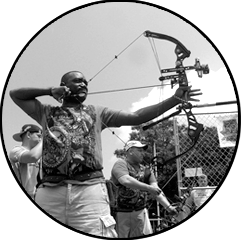
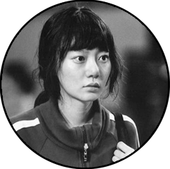
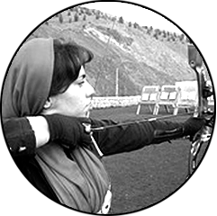
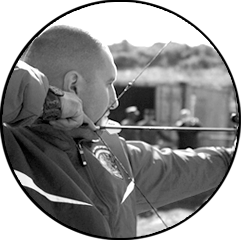

CLASSES
A101 Basic Archery
A101 is a basic archery course that focuses on beginning archery safety, skills, and drills. Participants learn about archery form, range rules and etiquette. Form training and fun games are introduced in this class.
Equipment will be provided with exception of safety kit.
Cost: $120/month
Schedule: Mondays and Wednesdays, 4-5pm
Prerequisite: Interest in learning about the sport of archery. Minimum age 8 years old or 7 w/ pre-evaluation.
A102 Intermediate Archery
A102 is an intermediate archery course that focuses on intermediate archery safety, form, and introduces new equipment styles of shooting Recurve and Compound bows. Fun games and form reinforcement techniques are emphasized in this class.
Equipment will be provided with exception of safety kit.
Cost: $120/month
Schedule: Tuesdays and Thursdays, 4-5pm
Prerequisite: A101 or recommendation from private lesson instructor. Minimum age 7 years old.
A103 Advanced Archery
After taking the A101, A102 classes, students are eligible to participate in the A103 class. This class focuses on a continued education towards tournament styles of shooting used by many archery tournament associations from around the world. Along with the tournament lesson, participants receive continued knowledge around their shooting form and advice on personal equipment selections.
Equipment will be provided with exception of safety kit.
Cost: $120/month
Schedule: Tuesdays and Thursdays, 5-6pm
Prerequisite: A101/A102 or equivalent. Minimum age 7 years old
INSTRUCTORS

Derek Jenkins
Derek is a Washington native and an experienced outdoorsman with many years hunting, fishing, skiing, canoeing, archery, shooting and minimalistic camping. His skillful mastery of bushcraft and wilderness survival knowledge helps define his character. He enjoys handcrafting his own long bows, flint knapped primitive arrows and making custom leather products.

Amy Smith
Amy truly has a passion for archery. She comes from a long line of hunters, fisherman, and trappers of Canada. Amy places a strong emphasis on safety and is enthusiastic about teaching. Amy also loves fitness, and has been a YMCA group exercise and personal trainer for over 18 years.

Doona Bae
Doona is a passionate bow hunter and avid target archer now for many years. She is a level two NAA Instructor. Doona has competed in both State and National Indoor & Outdoor level Archery Tournaments and IBO/3D Tournaments. She enjoys working with all levels of archers.

Nathan Lee
Nathan is an USA Archery Certified Level 3 NTS - Coach and has been teaching archery since 2009. He has been interested in Archery since he nocked his first arrow while a Boy Scout at Scout camp. Nathan has many years of experience teaching people of all ages, experience gained as a Martial Arts Instructor and Studio Manager.
ABOUT
Straight to the Point Archery is an indoor training facility with 28 shooting (14 - 10 yard lanes and 14 - 20 yard lanes) and 2 private coaching rooms. We also have access to 26 additional 20 yard lanes and an outdoor shooting field. We offer several types of lessons to accommodate everyone from the first time archer to the professional archer. Once set up with proper fitting equipment, each archer will be given the basic safety instruction to start and will be introduced to various shooting techniques.
From Beginner to Elite, archers of all ages and ability learn about this exciting Olympic and international sport. Sign up for a group lesson, private class, schedule a birthday or corporate party or compete at one of our many tournaments. Straight to the Point Archery also offers homeschooling programs, kids club events, YMCA classes, Boy and Girl Scouts achievement programs and several other youth group activities. We are dedicated to teaching valuable life skills to the youth in our community through the wonderful discipline of archery.
Straight to the Point Archery has instructors that are qualified level 1 and level 2 instructors and have met the safety requirements of the USA Archery (USAA). We teach in a positive learning environment. Our instructors also have extensive knowledge of the most advanced archery equipment and all forms of archery from the traditional long bow to the modern compound. Straight to the Point Archery also has specific instructors for recreational archery, competitive archery and bow hunting.
Straight to the Point Archery has an excellent network of contacts with the USA Archery (USAA), Washington State Archery Association (WSAA), Washington State Bow Hunters (WSB), National Field Archery Association (NFAA) and many more national and state archery associations. These partnerships allow you to feel confident in our facility and staff.
Straight to the Point Archery’s staff has decades of experience in the archery industry. We are committed to educating you with any questions that you may have.